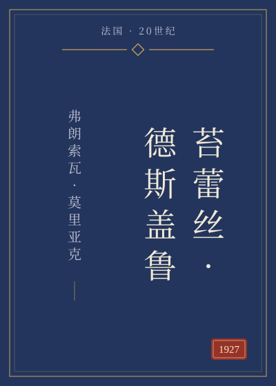
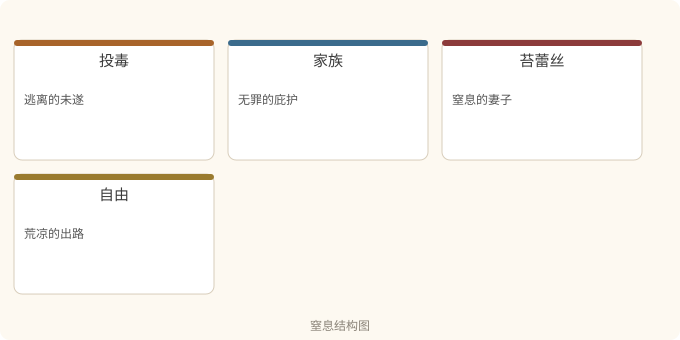

苔蕾丝·德斯盖鲁
一、基本信息
| 作者 | 弗朗索瓦·莫里亚克 |
|---|---|
| 成书/出版 | 1927年（作者页 B289 口径：Thérèse Desqueyroux published 1927） Francois Mauriac — Encyclopaedia Britannica（百科全书） |
| 国别/地区 | 法国 |
| 时代 | 现当代 · 20世纪 |
| 体裁 | 长篇小说 |
| 语言 | 法语 |

《苔蕾丝》窒息结构图（主题·结构图）
二、创作背景
作者页（B289）：莫里亚克 major_works 载'苔蕾丝·德斯盖鲁'（B289 作者页定位，详见 aidewangmo 条核对）。
Britannica（B289）：'whose heroine is driven to attempt the murder of her husband to escape her suffocating life'（女主人公为逃离窒息生活而试图谋杀丈夫——B289）。
三、内容脉络
苔蕾丝毒害丈夫伯纳德未遂——家族的'庇护'与无罪释放（通说待核）。
结尾：'自由'的荒凉（通说待核）。
四、主要人物表
| 人物 | 身份 | 说明 |
|---|---|---|
| 苔蕾丝 | 妻子 | 投毒者（B289） |
| 伯纳德 | 丈夫 | （通说待核） |
五、主题与艺术特点
- 窒息的婚姻与谋杀（B289）。
- '自由'的荒凉（通说待核）。
- 天主教罪恶观（B289 作者级语境）。
六、影响与评论
- Britannica：'whose heroine is driven to attempt the murder of her husband'（B289）。
Francois Mauriac — Encyclopaedia Britannica（百科全书） - Britannica：1952年诺奖（B289 作者级）。
Francois Mauriac — Encyclopaedia Britannica（百科全书）
七、阅读建议
难点
- 心理剧的封闭结构。
- 波尔多资产阶级语境。
- 《苔蕾丝·德斯盖鲁》（广西师范大学出版社，通说待核）。
- 法文原版（公有领域渐近）。
先《爱的荒漠》后本作。
八、待核实
- 1927年出版（Grasset说）核对。
- 苔蕾丝/伯纳德人名核对。
- 1950年电影改编待核。
本页主要来源
弗朗索瓦·莫里亚克的其他收录作品：爱的荒漠